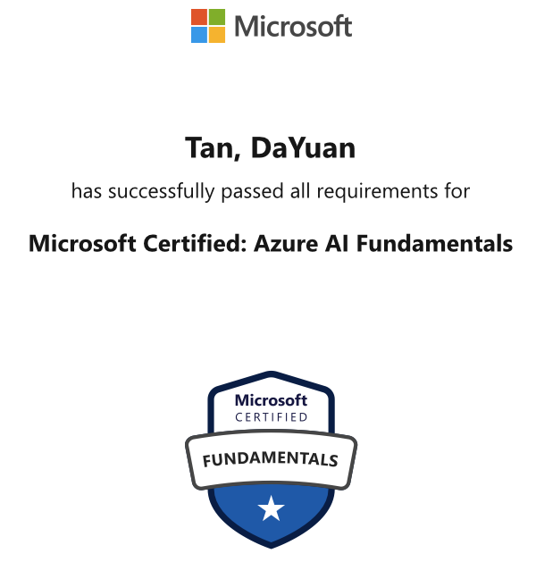
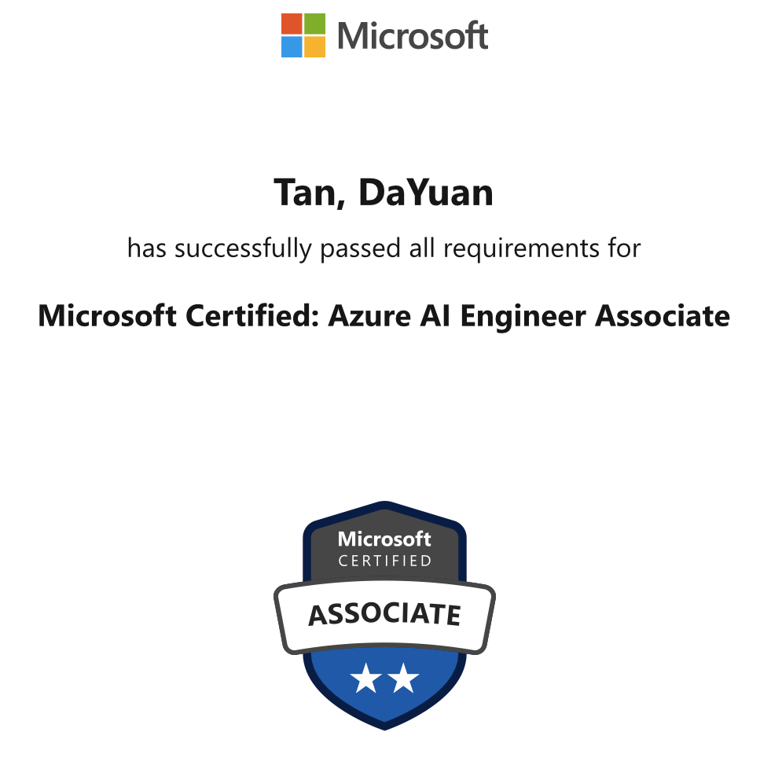
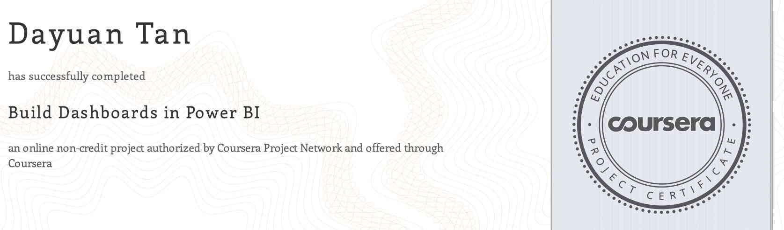
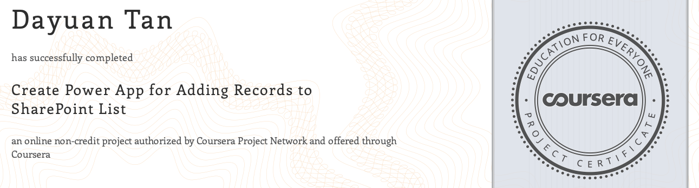

Services
Reviewer
IEEE CCNC 2025, The IEEE Consumer Communications & Networking Conference, Las Vegas, NV, USA, January 10-13, 2025
Reviewed 1 article.
IEEE BIBM 2024, The IEEE International Conference on Bioinformatics and Biomedicine, Lisbon, Portugal, December 3-6, 2024
Reviewed 1 article.
IEEE ICC 2024, The IEEE International Conference on Communication, Denver, CO, USA, June 9-13, 2024
Reviewed 1 article.
IEEE UIC 2022, The 19th IEEE International Conference on Ubiquitous Intelligence and Computing, Haikou, China, Dec 15-18, 2022
Reviewed 2 articles.
Association for Computing Machinery (ACM)
President, ACM UMBC Chapter, Aug 2022 - Aug 2024
Chinese Student and Scholar Association (CSSA)
President, CSSA, Aug 2021 - Aug 2024
Professional Industry Certificates
AI-900: Microsoft Certified: Azure AI Fundamentals Certificate by Microsoft
AI-102: Microsoft Certified: Azure AI Engineer Associate by Microsoft
 {kind=link}
{kind=link}
Professional Teaching Certificates
CIRTL Associate Certification (Online verified) by CIRTL & UMBC
The CIRTL mission is to develop future faculty committed to implementing and advancing evidence-based teaching practices to enrich undergraduate education that is accessible to all learners.

Course Certificates
Power BI & Power App Course Certificates
Build Dashboards in Power BI by Coursera
Prepare, Clean, Transform, and Load Data using Power BI by Coursera
Create Power App for Adding Records to SharePoint List by Coursera
{kind=link}
{kind=link}

AI Course Certificates
Azure AI Fundamentals AI-900 Specialization by Microsoft on Coursera, including:
- Course 1: Artificial Intelligence on Microsoft Azure
- Course 2: Microsoft Azure Machine Learning
- Course 3: Computer Vision in Microsoft Azure
- Course 4: Natural Language Processing in Microsoft Azure
AI TensorFlow in Practice Specialization by DeepLearning.AI on Coursera, including:
- Course 2: Convolutional Neural Networks in TensorFlow
Blockchain Course Certificates
Blockchain: Understanding Its Uses and Implications by The Linux Foundation on edx.org
Introduction to Hyperledger Blockchain Technologies by The Linux Foundation on edx.org
Blockchain and Business: Applications and Implications by INSEAD on Coursera
Blockchain: Foundations and Use Cases by ConsenSys Academy on Coursera

Software Copyright
Wireless Sensor Networks Localization Algorithms Simulation Platform (LocLab). (Developing Tool: MATLAB 2017a) issued by Copyright Protection Center of China
Integration Simulation Platform for Heterogeneous Wireless Network. (Developing Language: Java) issued by Copyright Protection Center of China